NodeJS Analytics
Node.js is a JavaScript runtime built on Chrome's V8 JavaScript engine. Node.js uses an event-driven, non-blocking I/O model that makes it lightweight and efficient. The Node.js package ecosystem, npm, is the largest ecosystem of open source libraries in the world.
Below you can find a network analysis of the Node.js github repository. The analysis is focused exclusively on github users which have interacted with the Node.js repository. Please note that data from not registered users is not included in the analysis.
Table of contents
Contributor Network
First some analysis has been conducted on users which have contributed to the project.
 Figure 1: Node.js contributor graph.
Figure 1: Node.js contributor graph.
Node.js contributor metrics:
-
Network Size:
\small 809 -
Degree Centralization Score:
\small 0.2811872 -
Clustering Coefficient:
\small 0.1674887 -
Average Path Length:
\small 3.97246
Commits
- Number of commits:
\small 14415 - Mean commits:
\small 17.818 - Median commits:
\small 1 Top 5 contributors by commits:
1. ry \small 3021 2. bnoordhuis \small 1911 3. isaacs \small 1630 4. indutny \small 741 5. piscisaureus \small 595 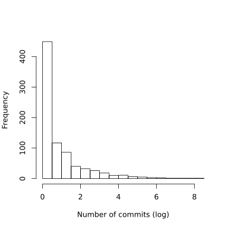 Figure 2: Number of commits (log) histogram.
Indegree
- Number of indegrees:
\small 6538 - Mean indegree:
\small 8.081582 - Median indegree:
\small 2 Top 5 contributors by indegree:
1. tj \small 199 2. isaacs \small 181 3. substack \small 175 4. ry \small 141 5. indutny \small 117 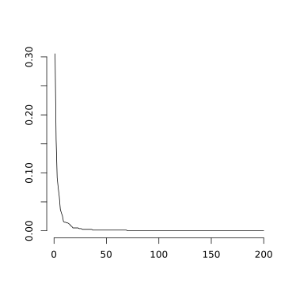 Figure 3: Contributor indegree distribution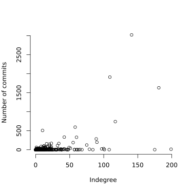 Figure 4: Number of commits with respect to indegree.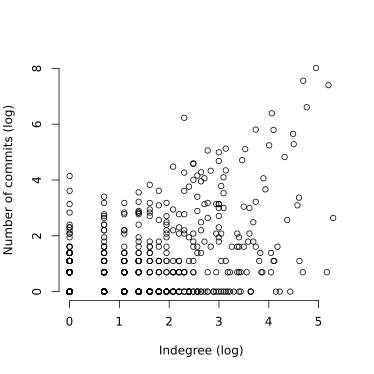 Figure 5: Number of commits (log) with respect to indegree (log).
Outdegree
- Number of outdegrees:
\small 6538 - Mean outdegree:
\small 8.081582 - Median outdegree:
\small 2 Top 5 contributors by outdegree:
1. cusspvz \small 460 2. Sannis \small 173 3. roryrjb \small 162 4. stevemao \small 105 5. rjrodger \small 102 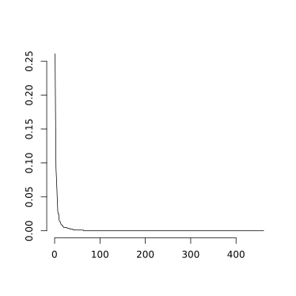 Figure 6: Contributor outdegree distribution.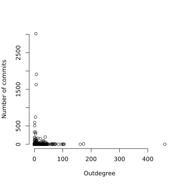 Figure 7: Number of commits with respect to outdegree.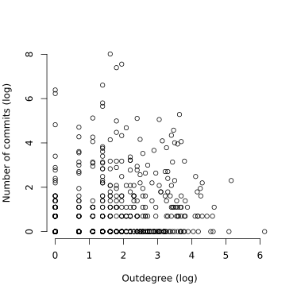 Figure 8: Number of commits (log) with respect to outdegree (log).
Betweenness
- Mean betweenness:
1526.272 - Median betweenness:
0.5098137 Top 5 contributors by betweenness:
1. cusspvz \small 1.398703 \times 10^5 2. tj \small 1.127193 \times 10^5 3. fixe \small 9.147880 \times 10^4 4. substack \small 5.138506 \times 10^4 5. maxogden \small 3.685972 \times 10^4 Figure 9: Contributor betweenness distribution.
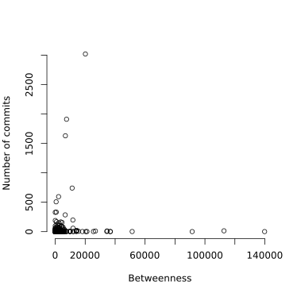 Figure 10: Number of commits with respect to betweenness.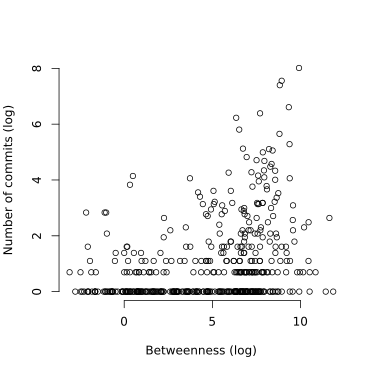 Figure 11: Number of commits (log) with respect to betweenness.
Indegree Closeness
- Mean indegree closeness:
4.794425 \times 10^{-6} - Median indegree closeness:
5.161663 \times 10^{-6} Top 5 contributors by indegree closeness:
1. jashkenas \small 5.287704 \times 10^{-6} 2. hueniverse \small 5.260611 \times 10^{-6} 3. matthewloring \small 5.241173 \times 10^{-6} 4. getify \small 5.234944 \times 10^{-6} 5. mariano \small 5.227938 \times 10^{-6} 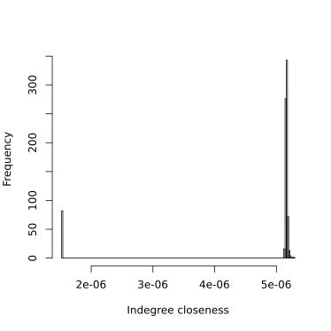 Figure 12: Contributor indegree closeness histogram.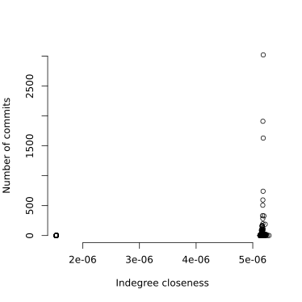 Figure 13: Number of commits with respect to indegree closeness.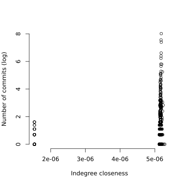 Figure 14: Number of commits (log) with respect to indegree closeness.
Outdegree Closeness
- Mean outdegree closeness:
1.068113 \times 10^{-5} - Median outdegree closeness:
1.441878 \times 10^{-5} Top 5 contributors by outdegree closeness:
1. jamesanthonyferguson \small 1.498374 \times 10^{-5} 2. ateich \small 1.496872 \times 10^{-5} 3. stevejs \small 1.489603 \times 10^{-5} 4. cusspvz \small 1.484583 \times 10^{-5} 5. doug-wade \small 1.479728 \times 10^{-5} 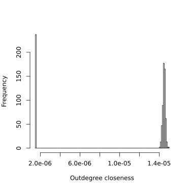 Figure 15: Contributor outdegree closeness histogram.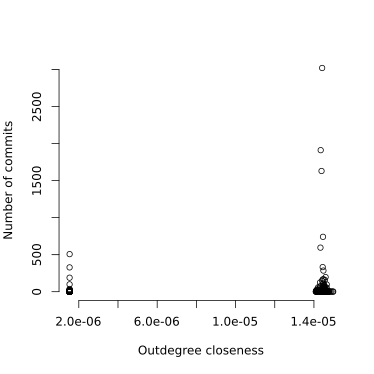 Figure 16: Number of commits with respect to outdegree closeness.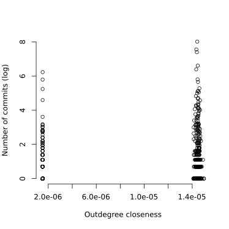 Figure 17: Number of commits (log) with respect to outdegree closeness.